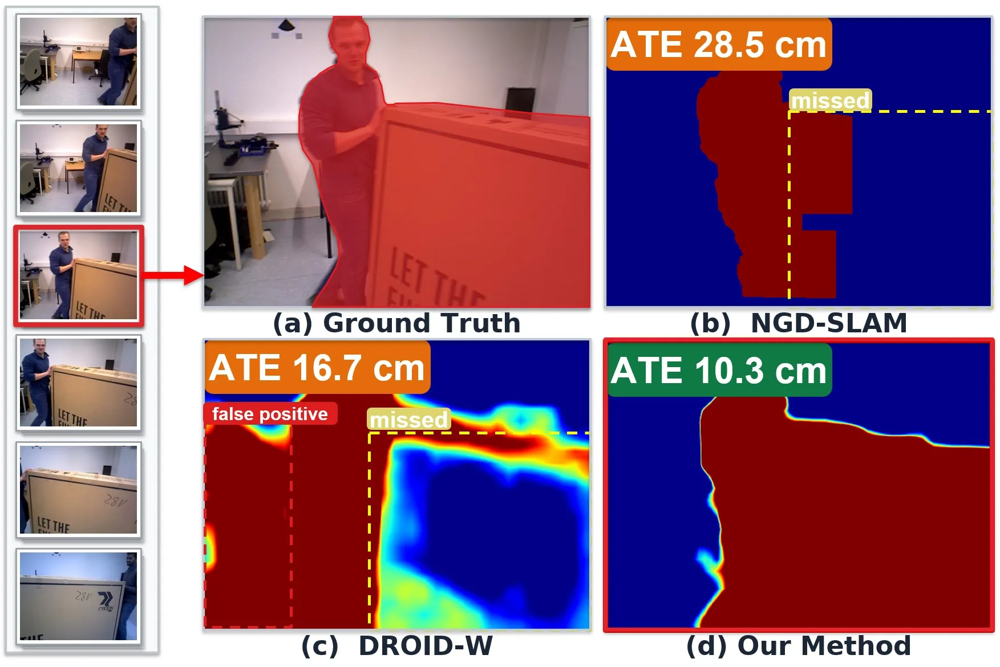
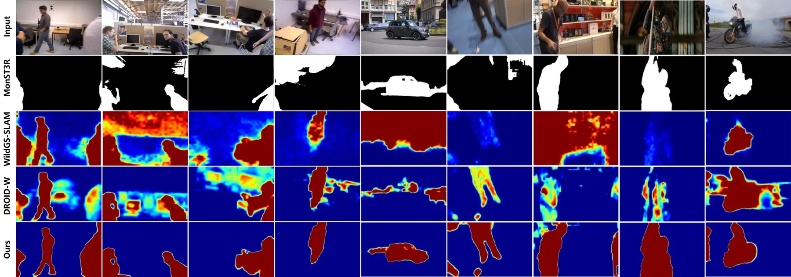
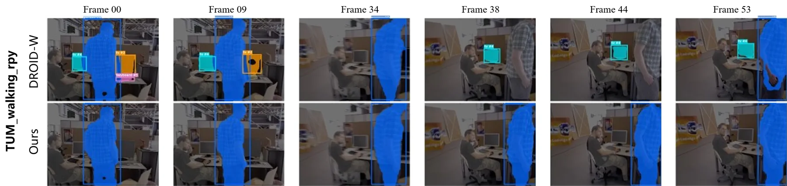
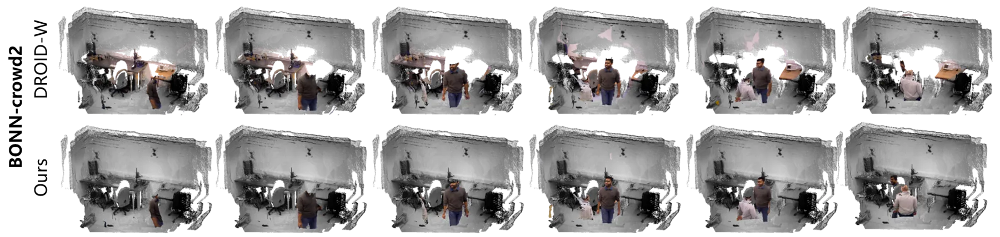

FLoTS-SLAM：用光流残差推导运动不确定性，并用两阶段优化稳住单目动态 SLAM
FLoTS-SLAM: Optical Flow-Derived Uncertainty for Monocular Dynamic SLAM with Two-Stage Optimization
把“光流减去相机运动流”的残差当作直接运动证据：残差大的像素说明相机运动解释不了它的位移，就是动态。残差经一个随中位数对齐质量自适应的鲁棒变换 ψ 送入高斯负对数似然，得到逐像素 σ；σ 由 DINOv2 特征经共享头回归，与几何变量交替优化。跟踪阶段先只用最低不确定性分位数像素、固定深度解位姿，再用这个“干净”参考位姿替换高不确定性像素的对应目标（re-anchoring），避免动态像素的系统性偏移被最小二乘吸收进位姿和深度。Bonn 平均 ATE 2.06 cm（DROID-W 2.23、DROID-SLAM 5.08），TUM 1.32 cm（DROID-W 1.37），DAVIS 平均 DM-IoU 0.73（DROID-W 0.54），运行 11.5–13.0 FPS。
作者、单位与技术谱系 · Research context
作者与单位
研究脉络
- DROID-SLAM（Teed & Deng, NeurIPS 2021）方法基座关系：本文直接以 DROID-SLAM 的稠密 BA 目标（式 2 第一项）与冻结的 recurrent update operator 作为跟踪主干，消融与速度对比也都以它为参照系。[论文第 III-B 节与参考文献 [27]]
- DROID-SLAM in the Wild（DROID-W, CVPR 2026）方法上游关系：本文沿用 DROID-W 的逐像素不确定性头形式（DINOv2 特征 + affine/softplus）、交替优化流程与特征一致性项 L_sim，但把不确定性来源从多视图特征不一致替换为光流残差。[论文第 III-C 节与表 III、参考文献 [12]]
- Metric3D v2（Hu et al., TPAMI 2024）方法上游关系：为单目 SLAM 提供 metric 尺度先验，式(2) 的第二项把逆深度正则到 d̂，解决单目视差只到尺度的可观测性问题。[论文第 III-B 节与参考文献 [39]]
合作网络
- 北航仪器科学与光电工程学院（两位作者）Haorui Du → Lipu Zhou关系：共同署名/同单位[arXiv v1 TeX 源作者块]
- DROID-SLAM 到 FLoTS-SLAMDROID-SLAM 开源实现 → FLoTS-SLAM关系：技术依赖[论文第 III-B 节与参考文献 [27]]
- DROID-W 到 FLoTS-SLAMDROID-W（Li et al.） → FLoTS-SLAM关系：组件依赖（不确定性头与特征一致性项）[论文第 III-C 节、表 III 与参考文献 [12]]
作者、单位、通讯作者标记均为 arXiv v1 TeX 源中的事实；技术谱系基于论文自述的“Following [12]”与参考文献引用关系，属于有来源的解读。论文未给出项目主页或代码仓库，无法核验是否存在更深的团队合作或师生关系，未做推断。
方法本质拆解 · What actually changed
是不是微调？
不是微调，也不是端到端重训。DROID-SLAM 的更新算子、DINOv2 编码器、Metric3D 深度网络全部冻结，唯一被优化的是接在 DINOv2 特征上的逐像素不确定性头（affine + offset softplus），它是在线、逐序列学习的，参数在序列内共享。相机位姿与逆深度通过高斯-牛顿迭代优化，属于测试时优化而非训练权重。
有没有额外约束？
输入侧多了三样东西：跟踪器给出的稠密对应 p* 与置信 W（本来就有）、由当前位姿与深度诱导的相机运动流、以及 Metric3D 的单目深度先验 d̂。新增的约束作用在“不确定性”这个隐变量上：光流残差的高斯负对数似然、DROID-W 的特征一致性项、以及 offset softplus 保证 σ 不为零；位姿侧则多了一条“第一阶段只用最低分位像素、且深度固定”的硬性结构约束。
推理/后端到底做了什么？
后端仍然是可微 dense BA，但被切成两段。每个高斯-牛顿迭代里先解只含位姿的 BΔξ = v（深度增量置零、只用低不确定性像素），再用这个参考位姿把高不确定性像素的对应目标替换为重投影预测，最后在全部像素上做位姿与逆深度的联合优化；两段在同一迭代内交替。没有额外的因子图、没有回环检测模块、没有学习式后端。
方法本质是什么？
本质是把“相机运动解释不了的位移”变成一个有物理含义的逐像素方差，再用它同时做两件事：筛选出可信子集求一个不受动态物体污染的参考位姿，以及把动态像素的观测目标改写成“静止假设下的位置”。它改变的是 BA 里残差的目标值而不只是权重，因此系统性偏移不再被最小二乘吸收进位姿与深度；它没有做的是对象级运动建模、没有估计动态物体的速度，也没有跨序列学习先验。
输入单目 RGB 与冻结的 DROID-SLAM/DINOv2/Metric3D → 在 BA 里用光流减相机运动流的残差定义逐像素不确定性 → 先低分位像素解参考位姿、再重锚定高分位像素做联合优化 → 得到抗动态干扰的位姿与深度，速度仍保持 10 FPS 以上。

结论与问题Conclusion & Motivation
核心结论
FLoTS-SLAM 的主张很具体：动态像素的判据应该是“相机运动解释不了的位移”，而不是外观异常或重建残差。作者把光流与相机运动诱导流之差作为残差，用高斯负对数似然把它变成逐像素不确定性 σ，并让残差的鲁棒变换随当前帧对齐质量自适应，避免早期迭代把大量静态像素误判为动态。优化上不再只做降权：第一阶段只用低不确定性像素、固定深度解出参考位姿，第二阶段把高不确定性像素的对应目标替换成“若场景静止它应出现的位置”，再做位姿与深度联合优化。结果是 Bonn 平均 ATE 从主干的 5.08 cm 降到 2.06 cm（−59%），TUM 1.62→1.32 cm（−19%），DAVIS 平均 DM-IoU 从最强 baseline 的 0.54 提到 0.73（+35%）。
动机与问题
现有动态 SLAM 有三条路线，各有硬伤。语义/检测路线按类别推运动，看不见的类别就漏，静态物体也可能被误判，论文用 NGD-SLAM 在 Bonn 上的漏检做了图示。移动目标分割（MOS）模型精度更好但推理代价对实时系统不可接受。基于渲染残差（WildGS-SLAM、UP-SLAM）或特征不一致（DROID-W）的逐像素不确定性不依赖类别，但它们都是外观层面的间接证据，在重建不准、弱纹理或语义复杂区域会失真；DROID-W 还会对视觉显著的静态结构产生响应。另一方面，已有用光流的系统要么额外跑一个独立光流网络（增加每帧开销），要么把“多大残差算动态”的阈值写死，位姿/深度误差会让静态像素越界。作者的问题因此是双重的：找一个直接、免费的运动证据，并让它的使用方式不只是加权。
方法Method
方法总览
系统建在 DROID-SLAM 的可微 dense BA 之上：冻结的 recurrent update operator 对每条帧图边给出稠密对应目标 p* 与置信 W；DINOv2 提特征，Metric3D 给单目深度先验 d̂，三个网络全部冻结。式(2) 的 BA 目标由稠密对应项与深度先验正则项组成，不确定性以 Ω = g(σ)·W 的形式进入马氏权重。不确定性分支定义 r = p* − p（光流减相机运动流），把 r 的模送入带自适应 ψ 的高斯负对数似然，并额外加一项 DROID-W 的特征一致性代价 L_sim（把硬阈值改成连续加权），总代价 L_unc = λ_sim·L_sim + λ_flow·L_flow。σ 不是逐像素自由变量，而是 DINOv2 特征经共享的 affine + offset-softplus 头输出，保证远离零且对相似特征给出一致预测；每个高斯-牛顿迭代内交替更新几何变量与不确定性头参数。
关键技术细节
三个设计点决定成败。第一是 ψ 的自适应形式：ψ(r) = β·r² + (1−β)·log(1+r²)，β = sigmoid(τ_r − r̄)，r̄ 是当前优化窗内残差模的中位数。对齐差时 β→0，对数项压缩大残差，被错配的像素不会被判成动态；对齐好后 β→1，退化为平方损失。作者假设静态像素占多数，因此中位数可以代表背景对齐水平，这个假设也是它的软肋。第二是第一阶段的“只用低分位像素”：位姿求解时令 Δd ≡ 0，法方程退化为 BΔξ = v，选中的像素只约束位姿、不约束自身几何，且沿用原始置信 W 而不再乘不确定性衰减，因为这一阶段只要求 σ 能把动态像素挡在最低分位之外。第三是重锚定：对最高分位像素 𝒟，用参考位姿 G* 与固定深度算出 p̂，替换对应目标；该残差在参考状态处为零，因此不给梯度向量贡献，只保留 Hessian 块作为局部二次约束——这一步是“换目标”而不是“调权重”，也是它能压住系统性偏移的原因。

实验Experiments
实验设置
评测用三个公开基准：Bonn RGB-D Dynamic（9 条序列）与 TUM RGB-D 的动态序列（9 条）看定位鲁棒性，DAVIS 提供像素级动态标注看掩码质量。指标为 Sim(3) 对齐后的 ATE RMSE（cm）、作者新提出的 Dynamic Mask IoU（DM-IoU）以及 FPS。对照覆盖四类：语义/几何动态 SLAM（DynaSLAM N+G）、通用深度 SLAM（DROID-SLAM）、动态 Gaussian SLAM（DG-SLAM、UP-SLAM、ADD-SLAM、Flow4DGS-SLAM、WildGS-SLAM）、鲁棒动态方法（DynaMoN、DROID-W），另加前馈方法 MonST3R；部分 baseline 的单序列数字直接取自 DROID-W。运行环境为单张 RTX 4090 加 96 核 CPU，计时包含单目深度估计与 DINOv2 特征提取但不含建图。
实验数字与比较
掩码质量（表 I，DAVIS 五个类别共 15 条序列）：总体平均 DM-IoU 0.73，对 DROID-W 0.54、MonST3R 0.46、WildGS-SLAM 0.36；车辆类 0.78 对 0.40，行人类 0.71 对 0.51，动物类 0.72 对 0.73（这一类比 DROID-W 略低）。定位（表 II）：Bonn 平均 ATE 2.06 cm，DROID-W 2.23、WildGS 2.44、DROID-SLAM 5.08、DynaSLAM 6.04；九条序列里七条第一或并列第一。TUM 平均 1.32 cm，DROID-W 1.37、WildGS 1.52、DROID-SLAM 1.62。单序列示例（图 1，Bonn）相对 NGD-SLAM 降 63.9%、相对 DROID-W 降 38.3%。速度（表 IV）：Bonn 11.5 FPS 对 DROID-W 12.2、DynaMoN 2.4、WildGS 0.3；TUM 13.0 对 14.4，两套数据都保持 10 FPS 以上。
消融/失败边界
表 III 在 Bonn 九条序列上逐项拆解：去掉 BA 中的不确定性权重最伤，ATE 从 2.06 退到 3.62；去掉重锚定的两个触发条件退到 2.37；去掉两阶段（只做联合优化）2.29；只去掉重锚定本身 2.23；把本文的不确定性估计器换成 DROID-W 的版本、保留两阶段与条件重锚定，则是 2.16。这组数字说明增益分两层：不确定性来源贡献了约 0.10 cm，两阶段加条件重锚定再贡献约 0.17 cm，且两者不是简单叠加。失败边界作者写得很明确：增益最大的场景要同时满足“前景有显著运动物体”和“静态结构足够多”，这样第一阶段才能拿到准确参考位姿、重锚定才会被触发；不满足时重锚定被关闭，系统退化为两阶段但不掉点。TUM 上差距本就小，因为一两个行人在大部分静态的室内场景里留下大量静态约束，仅靠降权也够用。另外整套方法依赖“静态像素占多数”这一中位数假设，以及 Metric3D 的单目尺度先验。
局限与迁移Limitations & Transfer
局限与待核验
论文没有单列 Limitations 章节，正文只承认重锚定继承参考位姿的全部误差、因此需要两个触发条件来把关，以及 TUM 上增益有限是场景性质决定的。我们要补的核验项有五个：一是代码写着“will be made publicly available”，截至抓取时没有仓库地址，复现性待核验；二是表 IV 只给总 FPS，第一阶段位姿求解与两次重锚定测试各自的开销没有单独计时；三是 DM-IoU 只在 DAVIS 上有像素级 GT，Bonn/TUM 只有定性图（图 3），室内低纹理与遮挡条件下的掩码精度缺数字；四是所有结果都是单次运行，没有方差或显著性检验，Bonn 上 2.06 与 2.23 这类 0.17 cm 的差距是否稳定需要复跑；五是部分 baseline 单序列数字引自 DROID-W，跨论文比较口径不完全一致。
与你研究路线的关系
最值得迁移的是“用两个已有量的差构造免费监督”：光流来自跟踪器本身的对应预测，相机运动流来自当前位姿与深度，两者相减不需要额外网络，也不需要真值，这与你做可靠性评估时偏好的“零真值自检量”是同一类工具，可以直接当作前端退化或场景动态性的在线指标。第二个可迁移点是两阶段求解的结构：先只用高置信子集解一个只含位姿的降维问题，再把其余观测按参考解重锚定后联合优化——这等价于把鲁棒估计里的“先定骨架、再吸收残差”写成可微形式，可以搬到 VIO 的滑窗求解里，用 IMU 预积分给第一阶段提供更强的姿态约束。第三个是失败条件的工程价值：作者用“高/低分位残差对比”和“修正方向一致性”决定是否启用重锚定，这种显式的启用判据比无条件加模块更可控。下一步实验建议：在你现有的单目/双目序列上，把光流残差统计量单独记录一周，看它与 ATE、与动态物体占比的相关性；再在加 IMU 的版本上重复表 III 的四档消融，确认增益是否仍来自重锚定而不是单目尺度先验。





